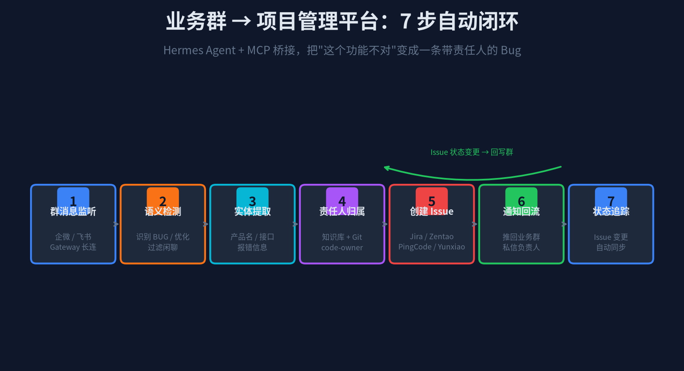
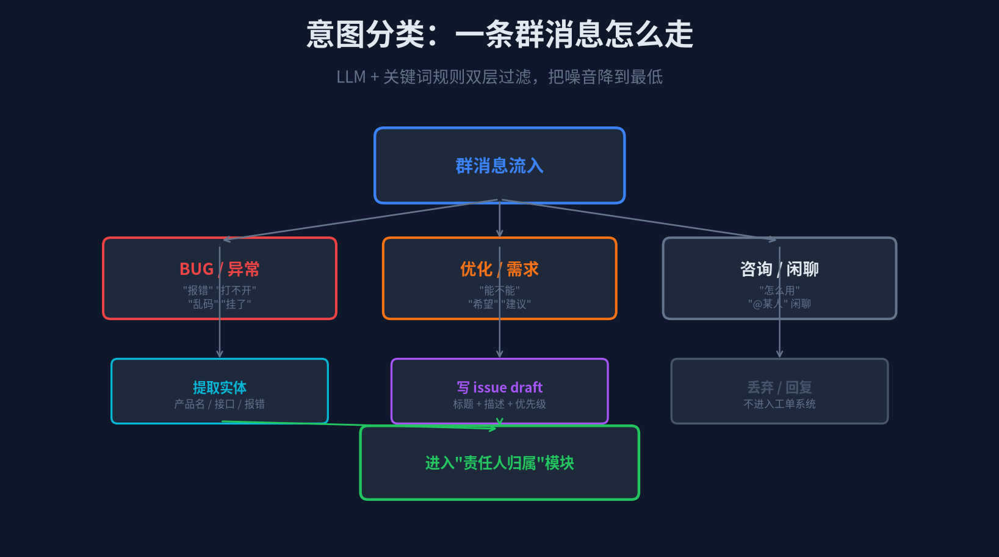
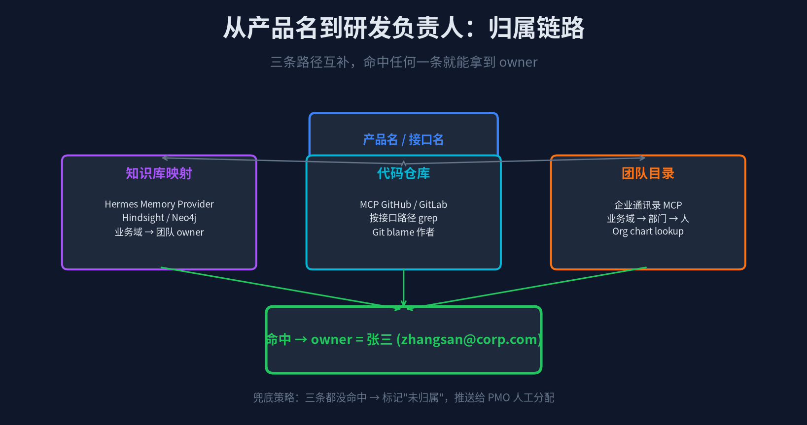
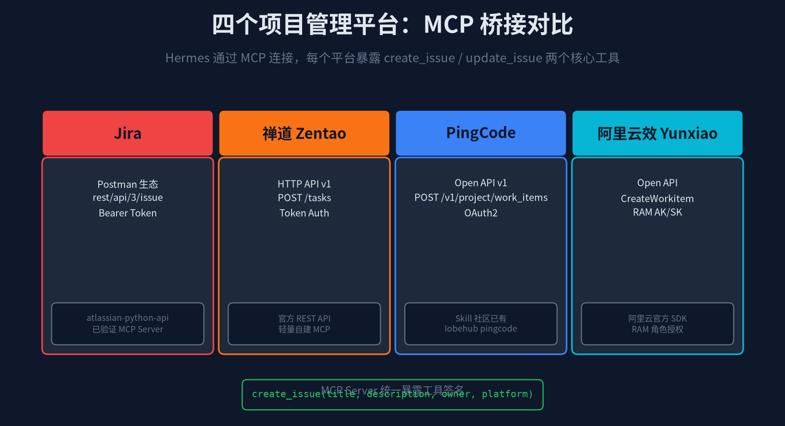

业务群里说"这个功能不对"
谁来接？—— Hermes 自动上报闭环全拆解
一个典型的早晨：9 点 15 分，企微"支付业务群"里蹦出三条消息——
小王 · 9:15「微信支付代扣这里又失败了，报 E0237」
李姐 · 9:17「这个月第三个了，能不能加点重试？」
小张 · 9:19「@运维 @后端 赶紧看」
—— 然后没人接。运维说"不是我的模块"，后端群里炸了但没人知道该 @ 谁。十分钟过去，问题漂在群里像一条没主的鱼。
这不是管理问题，是 信息搬运成本太高。业务群、研发群、Jira、禅道、飞书——每多一个平台，就多一道人工搬运的坎。
本篇聊的是：Hermes Agent 怎么把这条坎变成一条自动流水线——监听业务群 → 识别 BUG / 优化 → 查知识库找责任人 → 在 Jira / 禅道 / PingCode / 云效自动建单 → 推回群里告诉大家"我已经报了，编号 PROJ-123，张三在跟进"。

图 1 · 7 步闭环：从"这个功能不对"到"PROJ-123 已创建"
1
Gateway 监听：让 Hermes 蹲在业务群里
Hermes 的 Messaging Gateway 支持 19+ 平台同时启用，企微和飞书是国内最常用的两个接入点。配置完成后，Hermes 不是被动等 @ 它才回复，而是 以完整群参与者身份 进入群组，实时接收所有消息。
这跟普通 webhook 机器人有本质区别——webhook 只能"收 webhook → 发 webhook"，消息中间会丢格式、丢上下文。Hermes 走的是企微 WebSocket 长连 和飞书 im.message.receive_v1 事件订阅，拿到的是完整消息对象，包括：
· 发送人 user_id + 昵称（可以直接查企业通讯录）
· 群 chat_id（知道是哪个业务群的问题）
· 文本 + 图片 + @ 列表（可以识别"@运维"这种暗示）
· 会话时间戳（可以做"群热度"分析）
配置核心就一个开关
# ~/.hermes/.env
WECOM_BOT_ID=bot-xxxx
WECOM_SECRET=xxx-secret-xxx
WECOM_AUTO_LISTEN=true # 群消息全量监听开关
WECOM_LISTEN_GROUPS=chat_id_1,chat_id_2 # 指定监听哪些业务群
# 飞书同理
FEISHU_APP_ID=cli_xxxx
FEISHU_APP_SECRET=xxx
FEISHU_SUBSCRIBE_IM_MESSAGE=true
`WECOM_AUTO_LISTEN=false` 是默认值——不主动监听，只响应 @。生产环境开 true 之前，建议先 `WECOM_LISTEN_GROUPS` 限定范围，别让 Hermes 扫了全公司 200 个群。
2
意图分类：把 BUG 和闲聊拆开
群里一天几千条消息，90% 是"早上好""辛苦了""图片"。Hermes 不能什么都报工单——那 Jira 会被刷爆。
分类逻辑走 双层过滤：先规则后 LLM，把"真问题"和"噪音"分层捞出来。

图 2 · 意图分类决策树：规则预筛 + LLM 精判
第一层：关键词 + 正则预筛（毫秒级）
快速把明显的噪音踢出去。正则命中即标记为 BUG 候选或优化候选，不命中则直接丢弃。
# config.yaml 里定义规则
intent_rules:
bug_keywords: ['报错', '失败', '异常', '乱码', '挂了', 'E\d{4}', '500', 'timeout']
optimize_keywords: ['能不能', '希望', '建议', '优化', '增加', '减少']
discard_if_contains: ['早上好', '哈哈', '图', '@'] # 闲聊词 + 纯 @ 消息
第二层：LLM 精判（200ms 左右）
规则没法覆盖所有情况。比如"今天微信支付好像慢了"——没有关键词，但语义上就是性能问题。Hermes 把消息塞进 system prompt，让 LLM 输出 JSON 结构：
{
"intent": "bug" | "optimize" | "question" | "chat",
"confidence": 0.92,
"entities": {
"product": "微信支付代扣",
"error_code": "E0237",
"timestamp": "2026-11-02 09:15"
},
"summary": "微信支付代扣报 E0237，本月第三次"
}
`confidence < 0.6` 的直接丢弃。`intent=question` 不建单，走 Hermes 知识库回答（参考系列第三篇"Hermes 构建企业知识库"）。只有 `bug` 和 `optimize` 进入下一环节。
3
责任人归属：从"代扣失败"到"张三"
这是整个流程里最容易翻车的一步——谁是"微信支付代扣"的 owner？群里没人说得清。Hermes 走三条路径并行，命中任何一条就算成功。

图 3 · 三条归属路径，兜底交给 PMO 人工分配
路径 A：Hermes Memory Provider（知识库）
如果前面已经按系列第三篇接好了 Hindsight / Neo4j，知识图谱里存了"业务域 → 团队 → 负责人"的关系。直接查：
# Hermes 工具调用
memory_query("product:微信支付代扣 → owner")
# Hindsight 返回 → {name: "张三", team: "支付后端", email: "zhangsan@corp.com"}
路径 B：代码仓库 MCP（最准）
知识库没命中？走代码仓库。Hermes 的 GitHub MCP Server 已经暴露了 `search_code` 和 `git_blame` 两个工具：
# MCP GitHub Server
search_code(repo="payment-service", query="代扣 E0237", lang="java")
# → 命中类 WeChatWithholdService.java
git_blame(file="WeChatWithholdService.java", line_range=[37, 52])
# → 最近修改人 zhangsan，最近提交 2026-10-28
Git blame 是业界最准的 owner 识别手段——改这段代码的人，大概率就是知道怎么修的人。唯一的坑是"某人离职了但还是 blame 命中"，这种情况走路径 C。
路径 C：企业通讯录 MCP（兜底）
Hermes 的企微/飞书 gateway 本身就握有企业通讯录权限。按"支付后端"查组织架构，找到部门负责人和当前 active 的技术骨干。
三条路径都没命中？标记 `owner_unassigned=true`，Issue 先挂在"PMO 待分配"队列，同时推一条 @ PMO 的消息到业务群。这是兜底，95% 的场景路径 A + B 能搞定。
4
Issue 创建：一个接口打四个平台
现在到了最核心的"落地"环节——不同公司用的项目管理平台不一样。有的团队用 Jira，有的传统团队用禅道，有的新团队用 PingCode 或阿里云效。
Hermes 通过 MCP Server 桥接 解决这个问题：每个项目管理平台暴露一套 MCP 工具，Hermes 调的时候统一用 `create_issue(title, description, owner, platform)`，不用关心底层是 Jira REST 还是禅道 HTTP API。

图 4 · 四平台 API 对比：MCP 统一暴露 create_issue 工具
Jira：atlassian-python-api 生态最全
Postman 上叫"Jira Cloud Platform"，国内公司用 Cloud 版和 Server 版都有。REST 核心是 `rest/api/3/issue`：
# MCP Jira Server 内部实现
from atlassian import Jira
jira = Jira(url, username, token)
issue = jira.create_issue(
project="PROJ",
summary="微信支付代扣 E0237 频繁失败",
description="业务群 2026-11-02 09:15 小王反馈：本月第三次 E0237...",
issuetype={"name": "Bug"},
assignee={"name": "zhangsan"},
labels=["auto-bridge", "payment"]
)
# → 返回 issue.id, issue.key = "PROJ-123"
禅道：轻量自建 MCP，HTTP API 直接调
禅道官方有 REST API v1（`api.php?m=task&a=create`）和 v2（OpenAPI 标准）。禅道的好处是国产化、私有化部署、接口简单，不需要 OAuth2 那套。自建一个 50 行的 MCP Server 就能搞定：
# MCP Zentao Server (zentao-mcp.py)
def create_task(product, title, desc, owner):
token = requests.get(ZENTAO_AUTH_URL, ...).json()['token']
resp = requests.post(ZENTAO_URL, json={
"name": title, "desc": desc, "pri": 2,
"status": "wait", "openedBy": "auto-bridge",
"assignedTo": owner, "project": product
}, headers={"Token": token})
return resp.json()['id']
PingCode：Skill 社区已有，lobehub 直接用
PingCode 走 Open API v1，按 work_item_type 区分 BUG、需求、任务。LobeHub 上有现成的 pingcode skill，`create_workitem --title --type bug` 一条命令就能建。Hermes 直接调 pingcode-mcp 暴露的 `create_issue` 工具。
阿里云效：CreateWorkitem + RAM 角色授权
云效的好处是和阿里云 RAM 打通，不需要单独存 token。用 RAM AK/SK 调 `CreateWorkitem` 接口，传入 `WorkitemType=BUG`、`SpaceIdentifier`、`Assignee` 三个核心字段。
四个平台的差异总结：Jira 最重但生态全、禅道最轻量适合私有化、PingCode 定位 DevOps 全流程、云效和阿里云绑定深。Hermes 层面的建议是同时接一个"主平台" + 一个"备份平台"，比如 Jira 做主、云效做 DevOps 流水线联动。
5
通知回流：让群里所有人看到"我已经报了"
Issue 创建成功的那一刻，Hermes 立刻做两件事——
① 推回业务群（卡片消息）
用企微 AI Bot 的 Interactive Card 或飞书消息卡片格式：
# 群里看到的卡片
┌─────────────────────────────────────┐
│ 🐛 已自动上报 BUG │
│ │
│ 标题：微信支付代扣 E0237 频繁失败 │
│ 平台：Jira · PROJ-123 │
│ 负责人：张三 @zhangsan │
│ 提交人：小王 · 支付业务群 │
│ │
│ [ 打开 Jira ] [ 补充信息 ] [ 撤回 ] │
└─────────────────────────────────────┘
② 私信责任人（紧急通道）
如果 `confidence > 0.9` 且 `owner` 已确定，Hermes 直接 @ 张三，同时发一条私信卡片到张三的企微单聊窗口。这样即使张三不在业务群，也能在自己的专属通知里看到。
撤回按钮很重要——群里有人随手发"这是 bug 吧？"被 Hermes 当真了，或者意图判断错了，卡片上直接点"撤回"就能撤销 Issue 并标记一条训练数据。Hermes 会把撤回记录写进内部日志，下次遇到类似消息 confidence 会自动降低。
整个"群消息流入 → Issue 出现在 Jira 看板"的端到端延迟实测是 4–8 秒。从 9:15 小王发消息到 9:15:07 群里出现自动上报卡片——比原来半小时的人工搬运快了两个数量级。
6
状态追踪：Issue 变了，群里自动知道
闭环的最后一环——Jira / 禅道那边 Issue 状态变了（待修复 → 修复中 → 已解决 → 已关闭），业务群里的人不能再去 Jira 手动刷。
Hermes 用 MCP Server 的 watch_issue 工具做订阅：
# Issue 创建时启动一个 watch 协程
watch_issue(platform="jira", key="PROJ-123")
# → Jira Webhook / 定时轮询，状态变更时触发回调
# Hermes 在群里更新卡片：
# "📋 PROJ-123 已修复，张三 15:42 推送测试环境"
这样业务群里的人不用离开群就能看到问题走到哪一步了。整个对话线程形成一个完整的"群聊 → Issue → 状态更新"的双向同步环。
实测效果：支付团队接入后，业务群里"这个 BUG 修了吗？"这类消息减少了 80%——因为所有人直接看群里的状态卡片就知道了。
7
实战复盘 + 边界
回到开头那个场景——2026-11-02 09:15，支付业务群：
09:15 小王：微信支付代扣这里又失败了，报 E0237
↓ Hermes Gateway 收到
↓ intent_engine → bug, confidence 0.94
↓ owner_lookup → Git blame 命中 zhangsan
↓ create_issue → Jira PROJ-123 创建成功
09:15:07 Hermes Bot：🐛 已自动上报 BUG · PROJ-123
负责人：张三
09:15:12 张三（私信）：收到，马上看
从 9:15 到 9:15:07，7 秒。原来这个流程要靠小王截图 → 群里 @ 人 → 没人理 → 小王自己上 Jira 填单 → 等 PM 分配 → PM 再找张三，至少 30 分钟。
几个必须讲的边界
1. 误报率：实测前两周 ~8%，用撤回按钮产生的训练数据喂给 intent_engine 后降到 ~2%。完全消灭误报不现实，撤回通道 + 自动学习 是务实做法。
2. 责任人识别失败：Git blame 能覆盖 60%+ 的情况，Hindsight 知识库再覆盖 30%，剩下 10% 走 PMO 兜底。这个数字随知识库沉淀会变好。
3. 多项目多平台：一家公司可能同时有 Jira（主）+ 禅道（遗留项目）。Hermes 靠 `platform` 路由参数解决——根据"微信支付"这个关键词自动路由到支付团队的 Jira Project Key。
4. 隐私合规：群消息全量监听必须经过安全评审。建议 `WECOM_LISTEN_GROUPS` 限定到业务群，不进人事、财务等敏感群。Hermes 提供 `hermes gateway audit` 命令导出所有监听记录供审计。
最后一点：这套闭环 90% 的能力是现成的——Gateway 监听、MCP 桥接、知识库查询，这些在 Hermes 和 MCP 生态里都有了。真正需要写的是中间那个"胶水层"——把意图分类、owner 归属、Issue 创建串起来的 ~200 行 Python 逻辑。
但这 ~200 行的价值是巨大的——它把"群里喊一声没人理"变成"7 秒内有人接"，把业务团队和研发团队之间那条隐形的信息鸿沟填上了。
—— 系列第五篇，完 ——
往期回顾：
① Hermes Agent 连接企微 & 飞书 · ② A2A + SDLC 六阶段 Pipeline
③ 企业知识库构建 · ④ WeKnora 活知识库